Snow reports · US West
US West: US West snow report, 18 November. Forecast to 21 November: 33 in (83 cm) at China Peak, 30 in (77 cm) at Mammoth Mountain and 28 in (70 cm) …
US West snow forecast: China Peak +33 in by 21 November
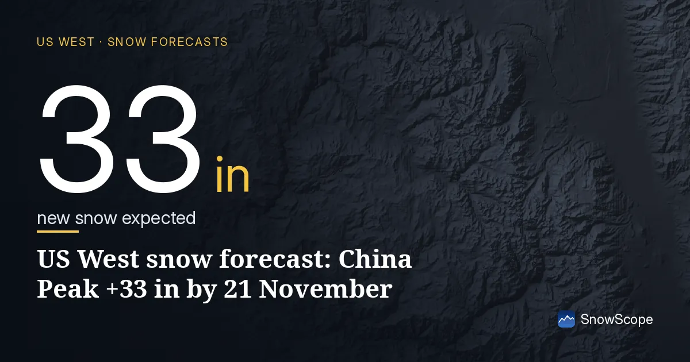
US West snow report, 18 November. Forecast to 21 November: 33 in (83 cm) at China Peak, 30 in (77 cm) at Mammoth Mountain and 28 in (70 cm) at June Mountain. Treat the later days with care. How sure are we? Resort values are model estimates for the upper slopes; stations are measurements, each at one point on the date shown. Confidence: good for the trend, lower for any single number.
Today's snow map
Top of this list: Kirkwood, about 26 in (66 cm) up high. Then Bear Valley 26 in (65 cm) and June Mountain 11 in (28 cm).
Snow-covered ground in the US West: 281,920 sq mi (730,170 km²). Resorts with snow: 168 of 193.

US West snow report, 18 November. Forecast to 21 November: 33 in (83 cm) at China Peak, 30 in (77 cm) at Mammoth Mountain and 28 in (70 cm) at June …
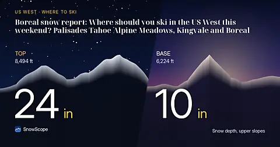
Where should you go skiing in the US West? If we were going this weekend, we would choose Palisades Tahoe Alpine Meadows, Kingvale and Boreal, based …

Crested Butte snow report: 38 in up top (US West, 18 November). This is a good start at Telluride. At 10,620 ft (3,237 m), our model has 22 in …

Fresh snow across the US West has built depths well above normal. At Palisades Tahoe Alpine Meadows, upper slopes hold 75 cm (measured 2026-11-18), compared to 10 cm typical for mid-November.


Indy Base Pass $419, Indy+ $469, two days at each member area. We set it against checked December day prices at seven Indy areas, and their snow odds.

Lookout Pass adult tickets for 2026-2027 are $63 midweek with a reservation, $75 on weekends. Mid-mountain had 20 in (50 cm) by 15 December in 85 % of past winters.

Montana Snowbowl's 2026/27 adult tickets are $78 on weekdays and $85 on weekends. Mid-mountain had 20 in (50 cm) by 15 December in 83 % of our past winters.

Ski Cooper holds its adult weekday price at $49 for 2026-27 ($99 weekends). Mid-mountain usually has 26 in (66 cm) of snow on 15 December, 70 % of winters above 20 in.

Sunlight tickets start at $74 and its Sunny 6 Pack is $349 if bought by November 30, 2026. Mid-mountain had 20 in (50 cm) by 15 December in 72 % of winters.

Timberline full-day tickets are $129 off-peak and $161 peak; the afternoon ticket is $96 off-peak. Mid-mountain usually holds 52 in (132 cm) by 15 December.

From Ski Cooper ($49 weekdays, $99 weekends) to Mt. Baker ($98.80 vs $115.42): checked December price splits at seven US West ski areas, with their snow odds.

Schweitzer's 2026/2027 3-Pack is $249, $83 a day by the resort's own count. The top usually holds 54 in (138 cm) of snow by 15 December.

Brighton from $72 vs Ski Cooper at $49 weekdays and Wolf Creek at $96: Utah and Colorado budget areas compared on 46 winters of December snow.

Brundage day tickets start as low as $65 on select days; mid-mountain had 20 in (50 cm) of snow on 15 December in 87 % of our past winters. Holiday dates to avoid.

Snow King adult day tickets start at $100. On our snow history its mid-mountain had 20 in (50 cm) by 15 December in 87 % of winters: a cheap way to ski the Jackson valley.

Loveland sells $60 online tickets through December 13, 2026, then $159 at the window. Is early-December snow good enough? Our 46 past winters answer week by week.

White Pass online tickets start at $69 off-peak and $89 on peak days, and mid-mountain had 20 in (50 cm) of snow on 15 December in 87 % of past winters.

Wolf Creek adult tickets are $96 on regular days and $110 on peak days for 2026-2027; mid-mountain had 34 in (87 cm) of snow on a typical 15 December.

Brighton day tickets start at $72 for 2026/27 if bought early. Mid-mountain usually has 37 in (94 cm) of snow on 15 December, against 25 in (64 cm) at Park City.

16 budget-friendly US ski areas ranked by December snow odds from 46 past winters, with the day prices we checked: from $49 weekdays to $125 and up.
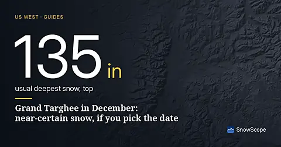
Every one of our 46 past winters had 20 in (50 cm) or more at Grand Targhee's mid-mountain on 15 December. Online day tickets run $125 to $180 by date.


Mt. Shasta Ski Park's upper slopes hold 20 cm (2026-11-13), but the base is bare with rain below 2020 m. Next: 32 cm forecast.

Deer Valley ski conditions on 13 November 2026: no real snow on the ground yet, about 4 in near the top from the weekend storm, rain on the low East Village side below about 6,700 to 7,600 ft, and 11 in up top over the week.
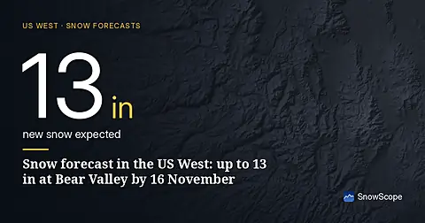
The snow is not done yet: we expect 13 in (34 cm) at Bear Valley, 13 in (34 cm) at Dodge Ridge and 13 in (33 cm) at Badger Pass by 16 November. A …

Park City, Utah snowfall forecast for 13 November 2026: almost no snow on the ground right now, about 5 in near the summit from the weekend storm with a snow level of 7,400 to 7,700 ft, rain at the base, and about 12 in up top over the week.

Alpental snow forecast for 13 November 2026: about 1 in on the upper mountain, rain almost to the summit this weekend with a snow level near 5,400 to 5,600 ft, then 4 to 5 in of mixed rain and snow up top next week.

Bogus Basin snow check for Boise skiers on 13 November 2026: no snow on the ground yet, rain and mixed snow this weekend with a snow level near 6,300 to 6,800 ft, then colder air and about 8 in at the summit by next week.

Telluride has 39 inches today. Peak snow weeks historically arrive in late December and March, not November.

Telluride's mid-slopes show 9 in (24 cm), running 92 percent of the seasonal average for mid-November. Saturday's system adds 5 in (13 cm) mostly above 10,000 ft.

Forecast from November 12: US West gets 11 in (27 cm) of new snow Saturday November 14; 56 resorts receive powder, busy week starts.

Kirkwood snow outlook: in line for 16 in by 15 November (US West). The next few days look decidedly unsettled in the US West, with the heaviest snow …

Cimarron Mountain Club, 39 in of snow: today's depth on the upper slopes (12 November). 42 in (106 cm): that is the snow on the upper slopes of …

Purgatory Resort (Durango, Colorado) ski report from our snow model: 3 in (7 cm) at the summit, bare base and mid-mountain, 4 to 7 in of new snow forecast in the next seven days, and what a usual Purgatory winter looks like.

Freezing level climbs to 13,000 ft (3,960 m) at Aspen Snowmass, creating rain-on-snow risk as temperatures warm mid-November (forecast from 11 Nov data).

Mt. Shasta Ski Park is forecast to receive 17 in (43 cm) of new snow through November 14, with the most at high elevations (model run November 11).

Wolf Creek measured 20 in (51 cm) on November 11, 2026, tracking 115% of normal while vastly outpacing last year's thin early start.
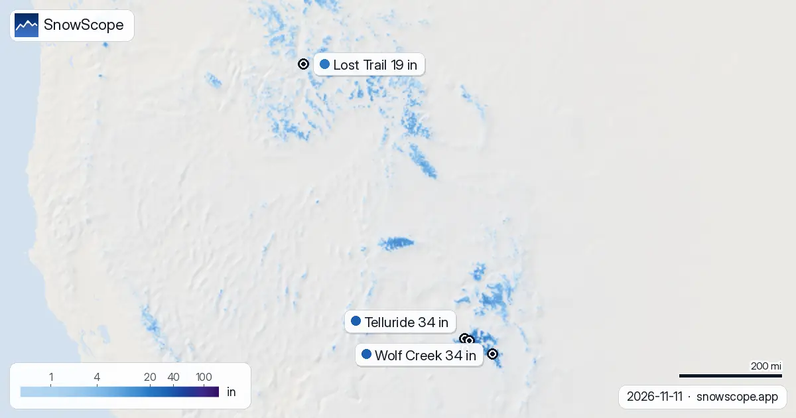
Wolf Creek's base sits at only 3 in (8 cm) while its summit holds 19 in (47 cm) on 11 November, a 15 in (39 cm) gap shaped by freezing level.

Where should you go skiing in the US West? Three inputs, one shortlist: today's snow depth, the new snow of the last 72 hours and the forecast point …

A storm on November 4 left 8 to 13 inches of new snow at five high Colorado stations near Aspen. Five days later, half of it was gone. What that means for powder days.

Wolf Creek leads with mid-slope snow at 361% of normal for November 10, well ahead of typical and signaling significant water storage in the mountains.

Where December 2026 looks snowier or leaner from Montana to New Mexico: the European seasonal forecast and our map, mountain by mountain, with Colorado, Utah and the Northern Rockies.

Vail in numbers: a usual peak of about 64 in (162 cm) at mid-mountain over 46 past winters, March the deepest month, plus terrain, access and safety.

Steamboat, Colorado, for families: what works for toddlers, school-age kids, teens and parents, with the snow of 46 past winters at three heights.

How to spend a first day at Park City Mountain, Utah, and when to go: our snow history gives about 71 in (180 cm) at the usual mid-mountain peak over 46 past winters.
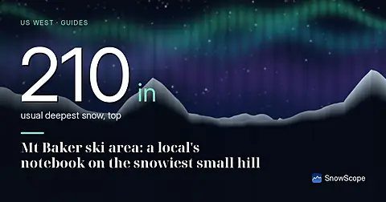
Mt Baker, Washington: about 133 in (337 cm) at the usual peak at mid-mountain in 46 past winters, a world snowfall record, no lodging on the hill, and what that means.

Plan Mammoth Mountain by season: about 93 in (235 cm) at the usual peak at mid-mountain over 46 past winters, March deepest, long springs, and winters that swing.

Jackson Hole myths checked against facts and our snow history: about 80 in (204 cm) at the usual peak at mid-mountain over 46 past winters, and no clear decline there.

Getting to Telluride in winter, airport by airport: Telluride Regional, Montrose, the drive on Highway 145 with the Colorado traction law, and the free gondola to Mountain Village.

Getting to Snowbird in winter: one canyon road (SR-210), Utah's traction law, the UTA ski bus and the drive from Salt Lake City airport.

Driving to Palisades Tahoe in winter: distances from Reno, California chain controls R-1 to R-3, weekend parking reservations, free TART buses.

Big Sky, Montana, made easy to picture: 5,850 acres under Lone Peak, and snow that is about five times deeper near the top than at the base in 46 past winters.

Aspen Snowmass compared: Snowmass has about 75 in (190 cm) at the usual peak at mid-mountain over 46 past winters, Aspen Mountain about 69 in (174 cm). Terrain, access, safety.

About 109 in (276 cm) is Alta's usual peak at mid-mountain over 46 past winters. Here: why snowboards stay home, the best months and how to get up the canyon.

Aspen Snowmass at 5 centimetres, 23 percent of normal for mid-November. Freezing levels above 2,600 metres brought rain instead of snow across the US West on November 8.

Telluride holds 115 cm (45 in) on 8 November. The freezing level climbs to 4,280 m (14,042 ft) on 9 November, bringing rain-on-snow risk to the highest slopes.

Mt Baker's mid-slopes match the historical snow depth for this date, with fresh powder concentrated in the northern Cascades and Colorado high country.
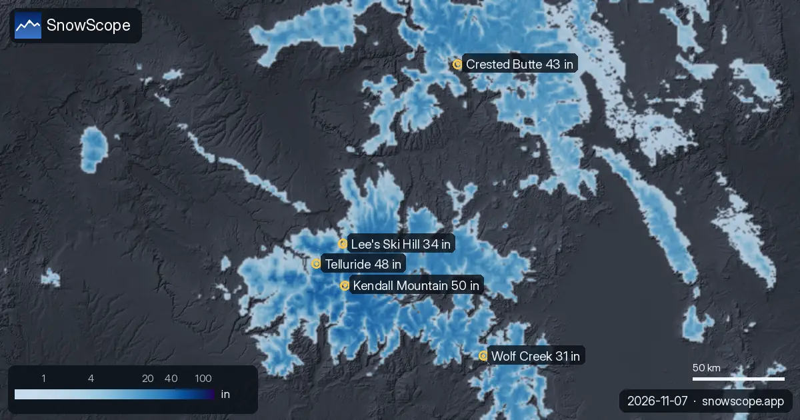
The most snow in the US West is at Kendall Mountain: about 50 in (127 cm) on the upper slopes, according to our snow model. Next come Telluride with …

Mt Baker: 8 in (21 cm) at the summit versus less than 1 in (2 cm) at the base. November forecast shows how this height gap will shift.

Mt Baker leads the US West with 19 in (47 cm) of upper snow, expecting 13 in (33 cm) through November 9. Model forecast from November 6.

We compared today's snow at 5 resorts in the US West with the same date in each of the past 46 winters. 3 of them are clearly above normal.

Mt Baker got 11 in (27 cm) of new snow in the last 72 hours, 4 in (11 cm) of it in the last 24 hours. It now has about 19 in (47 cm) on its upper …
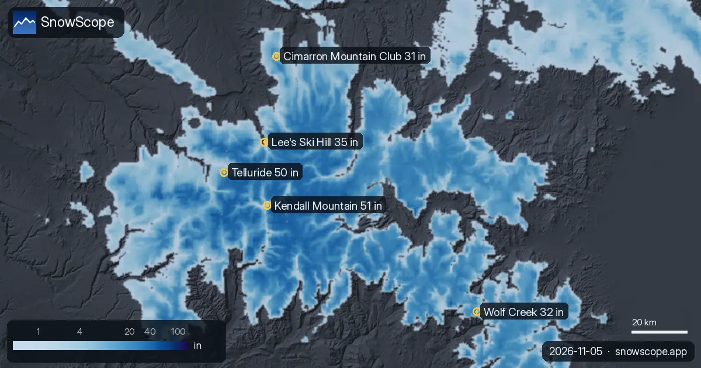
The most snow in the US West is at Kendall Mountain: about 51 in (130 cm) on the upper slopes, according to our snow model. Next come Telluride with …

Mt Baker will receive 16.5 in (42 cm) of new snow through November 8, leading the US West, based on our model run on November 5.

Kendall Mountain now has 51 inches on upper slopes as of November 5, 2026. Snow peaks in late December and March—the best historical windows to visit.

Telluride got 12 in (31 cm) of new snow in the last 72 hours, 1 in (3 cm) of it in the last 24 hours. It now has about 46 in (118 cm) on its upper …

The most snow in the US West is at Kendall Mountain: about 48 in (122 cm) on the upper slopes, according to our snow model. Next come Telluride with …
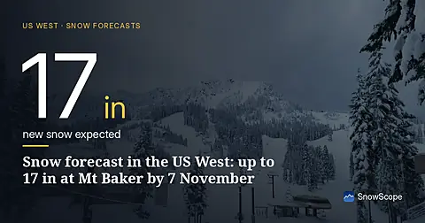
Rain will replace snow at Mt Baker on November 6, as the freezing level climbs to 8,957 ft (2,730 m), far above the ski area.
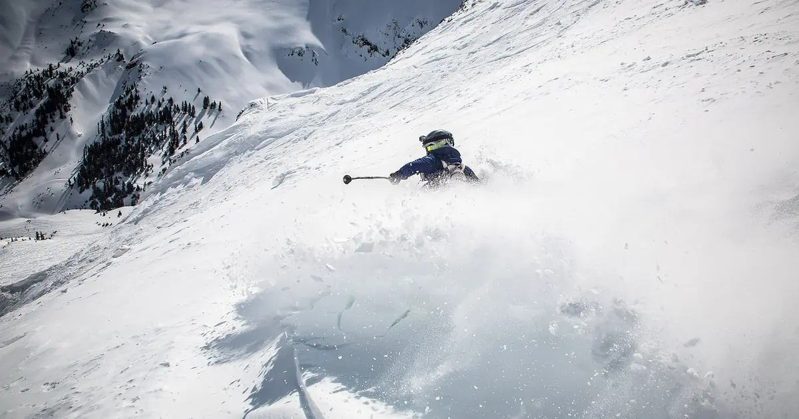
Silverton Mountain's 92 cm—deeper than all 46 past Novembers—arrived in just 72 hours; measured November 1st, 2026.

The most snow in the US West is at Kendall Mountain: about 53 in (134 cm) on the upper slopes, according to our snow model. Next come Telluride with …
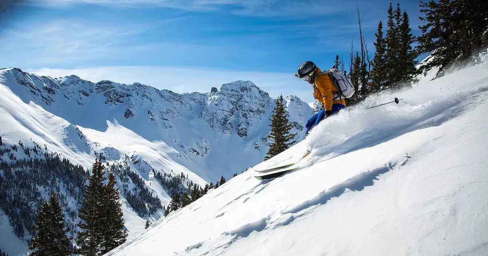
We combined today's snow depth, the new snow of the last 72 hours and the forecast to pick Silverton Mountain, Telluride and Lee's Ski Hill. Of these …